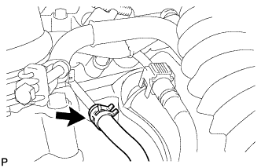
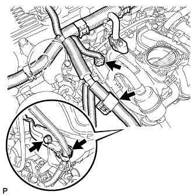
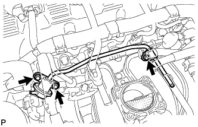

РЕГУЛЯТОР ДАВЛЕНИЯ В ТОПЛИВНОЙ СИСТЕМЕ > СНЯТИЕ |
| 1. СБРОСЬТЕ ДАВЛЕНИЕ В ТОПЛИВНОЙ СИСТЕМЕ |
Сбросьте давление в топливной системе (Нажмите здесь).
| 2. ОТСОЕДИНИТЕ ПРОВОД ОТ ОТРИЦАТЕЛЬНОГО ВЫВОДА АККУМУЛЯТОРНОЙ БАТАРЕИ |
| 3. СНИМИТЕ КОРПУС ДРОССЕЛЬНОЙ ЗАСЛОНКИ С ЭЛЕКТРОДВИГАТЕЛЕМ В СБОРЕ |
Снимите корпус дроссельной заслонки с электродвигателем в сборе (Нажмите здесь).
| 4. ОТСОЕДИНИТЕ ТОПЛИВНЫЙ ШЛАНГ № 2 |
|  |
Отсоедините топливный шланг № 2.
| 5. СНИМИТЕ РЕГУЛЯТОР ДАВЛЕНИЯ ТОПЛИВА |
|  |
Отсоедините разъем электровакуумного клапана продувки (VSV).
Освободите зажим жгута проводов.
Выверните болт и снимите кронштейн зажима жгута проводов.
|  |
Выверните 3 болта и снимите регулятор давления топлива.